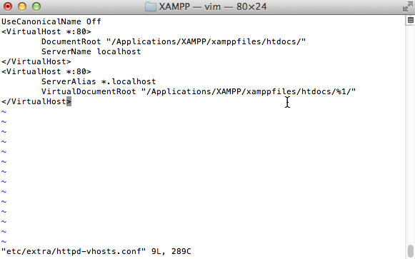
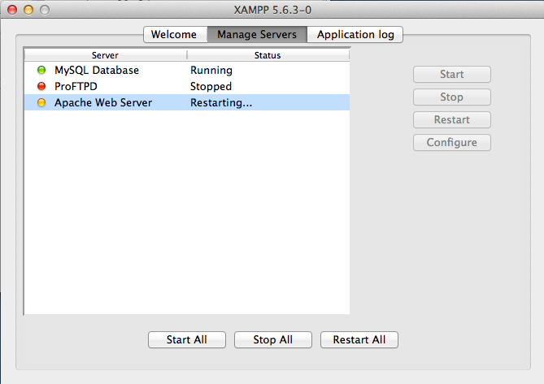
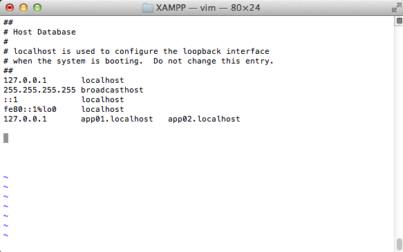
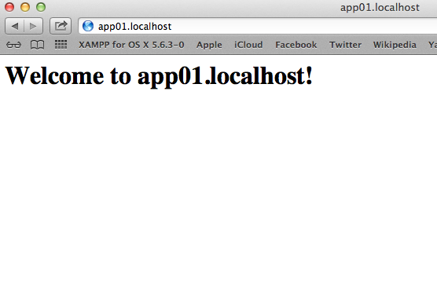

Configure Wildcard-Based Subdomains
Apache’s virtual hosting feature makes it easy to host multiple websites or web applications on the same server, each accessible with a different domain name. However, when you have a large number of virtual hosts sharing almost-identical configuration, wildcard-based subdomains simplify maintenance and reduce the effort involved in adding a new virtual host.
With wildcard subdomains, it’s no longer necessary to edit the Apache configuration file or restart the server to initialize a new virtual host. Instead, you simply need to create a subdirectory matching the subdomain name on the server with your content, and Apache will automatically use that directory to serve requests for the corresponding subdomain.
| Virtual hosts created in this manner will not be accessible from other systems, unless those systems are separately configured to associate the custom domains used by virtual hosts with the IP address of the VXOST server. |
This guide walks you through the process of setting up wildcard virtual hosts with VXOST, such that requests for subdomain.virtualhost are automatically served by the subdomain/ directory of the main server document root. Follow the steps below:
-
Open a new terminal and ensure you are logged in as an administrator.
-
Change to your VXOST installation directory (typically, /Applications/VXOST) and open the httpd.conf file in the etc/ subdirectory using a text editor.
-
Within the file, find the following line and uncomment it by removing the hash symbol (#) at the beginning of the line.
Include etc/extra/httpd-vhosts.conf

-
Open the httpd-vhosts.conf file in the etc/extra/ subdirectory of your VXOST installation directory using a text editor.
-
Replace the contents of this file with the following directives:
UseCanonicalName Off <VirtualHost *:80> DocumentRoot "/Applications/VXOST/vxostfiles/htdocs/" ServerName virtualhost </VirtualHost> <VirtualHost *:80> ServerAlias *.virtualhost VirtualDocumentRoot "/Applications/VXOST/vxostfiles/htdocs/%1/" </VirtualHost>

In this configuration, the first virtual host block configures how requests are handled by default. The second block configures wildcard virtual hosting for subdomains, such that requests for subdomain.virtualhost are automatically served by the subdomain/ directory of the /Applications/VXOST/htdocs/ directory. In particular, notice the %1 placeholder, which matches the subdomain name from the request URL.
-
Restart Apache using the VXOST control panel for your changes to take effect.

At this point, your wildcard subdomains are configured. You can easily test this by creating two new subdirectories at /Applications/VXOST/vxostfiles/htdocs/app01/ and /Applications/VXOST/vxostfiles/htdocs/app02/. Within each subdirectory, create a file named index.html and fill it with some sample HTML content. Use different content for each file, so that you can easily distinguish that they’re being served from different directories - for example:
<!-- index.html in app01 directory --> <html> <head></head> <body> <h1>Welcome to app01.virtualhost!</h1> </body> </html>
<!-- index.html in app02 directory --> <html> <head></head> <body> <h1>Hello from app02.virtualhost!</h1> </body> </html>
Since these domains do not actually exist, you also need to map them to the local IP address. Open the file /etc/hosts in a text editor and add the following line to it:
127.0.0.1 app01.virtualhost app02.virtualhost

| Instead of performing this step for each new subdomain, use a local DNS server like dnsmasq to automatically resolve requests for *.virtualhost to the local IP address. Find out more about dnsmasq, and read this Stack Overflow thread for information on how to configure wildcard subdomains with dnsmasq. |
At this point, you should be able to enter the URLs http://app01.virtualhost or http://app02.virtualhost in your browser’s address bar, and you should then see the corresponding HTML page.
